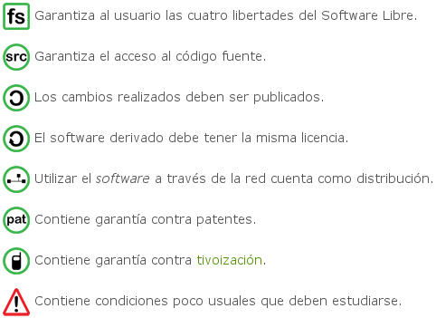
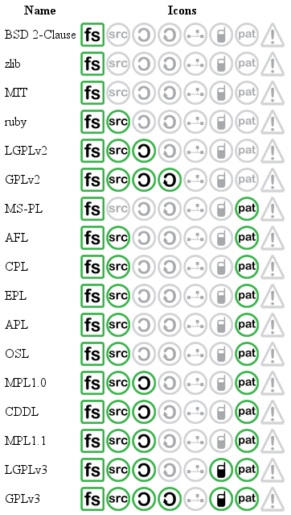
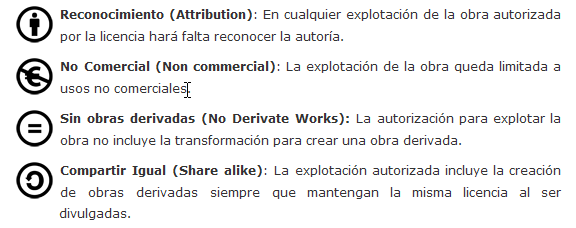
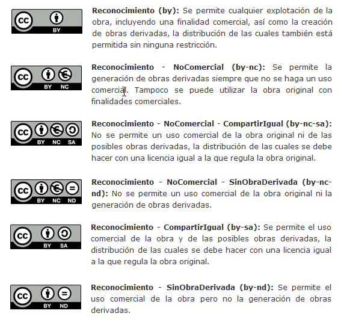

Tipos software y licencias#
Un Programa es lista de instrucciones escritas en un lenguaje de programación utilizadas para controlar las tareas de una máquina.
/*
primos.c is a free (GPLv3) program to list prime numbers using c
Copyright (C) 2009 by Daniel González Trabada
This program is free software: you can redistribute it and/or
modify it under the terms of the GNU General Public License
as published by the Free Software Foundation, either version 3
of the License, or (at your option) any later version.
This program is distributed in the hope that it will be useful,
but WITHOUT ANY WARRANTY; without even the implied warranty of
MERCHANTABILITY or FITNESS FOR A PARTICULAR PURPOSE. See the
GNU General Public License for more details.
You should have received a copy of the GNU General Public License
along with this program.
If not, see <http://www.gnu.org/licenses/>;.
*/
#include <stdio.h>
#include <stdbool.h>
int main() {
int c,d,n=100;
bool es_primo=false;
c=0;
while (c < n) {
c++;
es_primo=true;
for (d = 2; d < c; ++d) {
if (c % d == 0) {
es_primo = false;
break;
}
}
if (es_primo) {
printf("%d ", c);
}
}
printf("\n");
return 0;
}
Compilar significa traducir un código de programación a codigo ejecutable por la máquina
gcc primos.c
Ejecutar es la acción de iniciar la carga de un programa o de un archivo ejecutable.
./a.out
Registro Territorial de la Propiedad Intelectual
Tipos de software#
Software de sistema: Su objetivo es desvincular adecuadamente al usuario y al programador de los detalles del sistema informático en particular que se use, aislándolo especialmente del procesamiento referido a las características internas de: memoria, discos, puertos y dispositivos de comunicaciones, impresoras, pantallas, teclados, etc. Incluye entre otros: Sistemas operativos, Controladores de dispositivos, Herramientas de diagnóstico, etc …
Software de programación: Es el conjunto de herramientas que permiten al programador desarrollar programas de informática, usando diferentes alternativas y lenguajes de programación, de una manera práctica. Incluyen en forma básica: Editores de texto, Compiladores, Intérpretes, Depuradores, Entornos de desarrollo integrados (IDE): Agrupan las anteriores herramientas, usualmente en un entorno visual, de forma tal que el programador no necesite introducir múltiples comandos para compilar, interpretar, depurar, etc. Habitualmente cuentan con una avanzada interfaz gráfica de usuario (GUI).
Software de aplicación: Es aquel que permite a los usuarios llevar a cabo una o varias tareas específicas, en cualquier campo de actividad susceptible de ser automatizado o asistido, con especial énfasis en los negocios. Incluye entre muchos otros: Aplicaciones para Control de sistemas y automatización industrial, Aplicaciones ofimáticas, Software educativo, Software empresarial8, Bases de datos, Videojuegos Software médico, etc
Tipos de licencias software#
La autorización que el titular de los derechos patrimoniales de una obra literaria, artística, musical, audiovisual o de software da a otras personas sobre lo que pueden y no pueden hacer con la obra, se realiza a través de una Licencia de Uso. La licencia es un documento que expresa la voluntad del autor sobre los límites y alcances del uso que pueden hacer las personas respecto a la:
Copia.
Reproducción.
Modificación.
Traducción.
Adaptación.
Beneficio económico.
En este sentido se pueden encontrar una variedad de tipos de licencias que pueden ir desde las más restrictivas, en la cual el autor se reserva todos los derechos (de ahí la expresión “todos los derechos reservados”), hasta las licencias más permisivas en las cuales el autor autoriza una amplia posibilidad de usos de la obra a las personas («algunos derechos reservados»), el extremo de esta posibilidad es el dominio público. Sin embargo, en todos estos tipos de licencias esta el principio de respeto por el otro y por lo que ha surgido de su creación, es decir el respecto por los Derechos Morales, lo que implica que en ningún momento una persona puede adjudicarse la autoría de una obra que no ha creado, independiente de la licencia que tenga. La forma de indicar los términos de la Licencia de Uso en una obra, es a través de una leyenda que sintetice lo que se puede y lo que no se puede hacer con la obra. En los libros, las licencias más restrictivas para los usuarios tienen una leyenda en una de las páginas, como la que esta a continuación:
Todos los Derechos Reservados © Nombre del Autor y/o Nombre de la Editorial. Prohibida la reproducción total o parcial de esta obra, por cualquier medio, sin la autorización del autor/editor.
Mientras que las licencias más permisivas con los usuarios, presentan leyendas del siguiente tipo:
Derechos de Copia © Nombre del Autor y/o Nombre de la Editorial. Se permite la copia en cualquier formato siempre y cuando no se alteren los contenidos y se haga reconocimiento de los autores/editorial.
Por lo tanto, una Licencia de Uso debe indicar como mínimo, la voluntad del autor en los siguientes aspectos:
La licencia no pone en consideración el reconocimiento de la autoría de la obra, porque como lo establece el Derecho Moral en el Derecho de Autor, esto no es negociable. Siempre que se conozca la autoría de una obra se debe indicar.
Software privativo#
El software privativo es cualquier software que no es libre. Está prohibido su uso, redistribución o modificación, o requiere que se solicite permiso, o tiene tantas restricciones que de hecho no se puede hacer libremente
EULA, son las siglas de “End-User License Agreement” o traducido al español, “Acuerdo de Licencia con el Usuario Final” que son las condiciones o limitaciones que debes aceptar para poder utilizar ese programa, aplicación, juego, producto, etc.
Licencia Retail#
Windows Retail es la licencia “de toda la vida” que podemos adquirir en la propia página de microsoft.com. Esta licencia va ligada a una cuenta de Microsoft, de manera que podremos activar cualquier equipo tan solo iniciando sesión, pero esto no quiere decir que podamos activar todos los equipos con una sola licencia, tendremos que desactivar primero un ordenador antes de activarlo en el siguiente, la ventaja es que podremos hacer cambio en el hardware sin tener que comprar otra licencia. En las licencias de tipo retail, normalmente podemos elegir entre una licencia completa, o una licencia de actualización, que permite actualizar un sistema anterior al nuevo, por un coste algo más reducido.
slmgr /upk # desinstala la licencia
slgmr /cpky # la elimina del registro
slmgr /ipk [clave de producto] # instalar la clave de activación
slmgr /ato # activará la licencia
Licencia VOLUMEN (VLM)#
Las licencias VOLUMEN, enfocadas a empresas, son las más completas. En este caso, el precio por licencia suele tener descuento y la ventaja está en que se puede utilizar en varios ordenadores en los que, por cierto, se pueden también hacer cambios de hardware. A los usuarios normales no les aporta ventaja de ningún tipo, son como las RETAIL para empresas. Los Cracks para activar la licencias de windows piratas utilizan estas licencias, Windows pregunta a un servidor KMS, significa Key Management Service, y es un servicio de publicación automática de licencias de Microsoft, capaz de servir licencias para sistemas operativos. El Crack emula el servidor y dice que la licencia que se ha introducido es valida, de esta forma windows queda activado. A partir de W8 los Cracks son más complicados ya que verifica que el KMS no tenga la misma IP. Esta práctica además de ser ilegal crea un fallo en la seguridad del equipo.
MSDN (LICENCIAS DE EDUCACIÓN.)#
Son unas licencias especiales de Microsoft que permiten su uso únicamente para actividades educativas y de formación. Cualquier uso de estas licencias en equipos que desarrollen actividades fuera de este ámbito, es ilegal. Existen también licencias de este tipo para empresas de desarrollo, academias, etc
Licencia OEM#
Las siglas OEM hacen referencia a Original Equipment Manufacturer, que en castellano se podría traducir como fabricante de equipamiento original.
Esta licencia va ligada a la placa base, de modo que solo podremos usar la licencia en un único equipo, pero con la ventaja de un reducido coste. Podemos cambiar otros componentes hardware (RAM, tarjeta gráfica) sin que afecte a la licencia. Estas claves actualmente pueden comprarse de forma muy barata ~20€ en comparación con las retail ~250€, las OEM son las compañías como HP, Dell, etc que compran estas licencias directamente a Microsoft muchas licencias OEM.

Software libre#
What is Open Source explained in LEGO
La libertad de usar el programa, con cualquier propósito (Uso).
La libertad de estudiar cómo funciona el programa y modificarlo, adaptándolo a las propias necesidades (Estudio).
La libertad de distribuir copias del programa, con lo cual se puede ayudar a otros usuarios (Distribución).
La libertad de mejorar el programa y hacer públicas esas mejoras a los demás, de modo que toda la comunidad se beneficie (Mejora).
Licencias GPL#
Una de las más utilizadas es la Licencia Pública General de GNU (GNU GPL). El autor conserva los derechos de autor (copyright), y permite la redistribución y modificación bajo términos diseñados para asegurarse de que todas las versiones modificadas del software permanecen bajo los términos más restrictivos de la propia GNU GPL. Esto hace que sea imposible crear un producto con partes no licenciadas GPL: el conjunto tiene que ser GPL
Es decir, la licencia GNU GPL posibilita la modificación y redistribución del software, pero únicamente bajo esa misma licencia. Y añade que si se reutiliza en un mismo programa código “A” licenciado bajo licencia GNU GPL y código “B” licenciado bajo otro tipo de licencia libre, el código final “C”, independientemente de la cantidad y calidad de cada uno de los códigos “A” y “B”, debe estar bajo la licencia GNU GPL.
En la práctica esto hace que las licencias de software libre se dividan en dos grandes grupos, aquellas que pueden ser mezcladas con código licenciado bajo GNU GPL (y que inevitablemente desaparecerán en el proceso, al ser el código resultante licenciado bajo GNU GPL) y las que no lo permiten al incluir mayores u otros requisitos que no contemplan ni admiten la GNU GPL y que por lo tanto no pueden ser enlazadas ni mezcladas con código gobernado por la licencia GNU GPL.
En el sitio web oficial de GNU hay una lista de licencias que cumplen las condiciones impuestas por la GNU GPL y otras que no.
Aproximadamente el 60% del software licenciado como software libre emplea una licencia GPL o de manejo.
Licencias AGPL#
La Licencia Pública General de Affero (en inglés Affero General Public License, también Affero GPL o AGPL) es una licencia copyleft derivada de la Licencia Pública General de GNU diseñada específicamente para asegurar la cooperación con la comunidad en el caso de software que funcione en servidores de red. La Affero GPL es íntegramente una GNU GPL con una cláusula nueva que añade la obligación de distribuir el software si éste se ejecuta para ofrecer servicios a través de una red de ordenadores. La Free Software Foundation recomienda que el uso de la GNU AGPLv3 sea considerado para cualquier software que usualmente corra sobre una red.
Licencias estilo BSD#
Llamadas así porque se utilizan en gran cantidad de software distribuido junto a los sistemas operativos BSD. El autor, bajo tales licencias, mantiene la protección de copyright únicamente para la renuncia de garantía y para requerir la adecuada atribución de la autoría en trabajos derivados, pero permite la libre redistribución y modificación, incluso si dichos trabajos tienen propietario. Son muy permisivas, tanto que son fácilmente absorbidas al ser mezcladas con la licencia GNU GPL con quienes son compatibles. Puede argumentarse que esta licencia asegura “verdadero” software libre, en el sentido que el usuario tiene libertad ilimitada con respecto al software, y que puede decidir incluso redistribuirlo como no libre. Otras opiniones están orientadas a destacar que este tipo de licencia no contribuye al desarrollo de más software libre (normalmente utilizando la siguiente analogía: “una licencia BSD es más libre que una GPL si y sólo si se opina también que un país que permita la esclavitud es más libre que otro que no la permite”).
Licencias estilo MPL y derivadas (Mozilla Public License)#
Esta licencia es de Software Libre y tiene un gran valor porque fue el instrumento que empleó Netscape Communications Corp. para liberar su Netscape Communicator 4.0 y empezar ese proyecto tan importante para el mundo del Software Libre: Mozilla. Se utilizan en gran cantidad de productos de software libre de uso cotidiano en todo tipo de sistemas operativos. La MPL es Software Libre y promueve eficazmente la colaboración evitando el efecto “viral” de la GPL (si usas código licenciado GPL, tu desarrollo final tiene que estar licenciado GPL). Desde un punto de vista del desarrollador la GPL presenta un inconveniente en este punto, y lamentablemente mucha gente se cierra en banda ante el uso de dicho código. No obstante la MPL no es tan excesivamente permisiva como las licencias tipo BSD. Estas licencias son denominadas de copyleft débil. La NPL (luego la MPL) fue la primera licencia nueva después de muchos años, que se encargaba de algunos puntos que no fueron tomados en cuenta por las licencias BSD y GNU. En el espectro de las licencias de software libre se la puede considerar adyacente a la licencia estilo BSD, pero perfeccionada. Copyleft
El titular de los derechos de autor (copyright) de un software bajo licencia copyleft puede también realizar una versión modificada bajo su copyright original, y venderla bajo cualquier licencia que desee, además de distribuir la versión original como software libre. Esta técnica ha sido usada como un modelo de negocio por una serie de empresas que realizan software libre (por ejemplo MySQL); esta práctica no restringe ninguno de los derechos otorgados a los usuarios de la versión copyleft.
En España, toda obra derivada está tan protegida como una original, siempre que la obra derivada parta de una autorización contractual con el autor. En el caso genérico de que el autor retire las licencias “copyleft”, no afectaría de ningún modo a los productos derivados anteriores a esa retirada, ya que no tiene efecto retroactivo. En términos legales, el autor no tiene derecho a retirar el permiso de una licencia en vigencia. Si así sucediera, el conflicto entre las partes se resolvería en un pleito convencional.
Diferentes tipos de Licencias de Software Libre#
 Tipos de licencias (documentos)#
Todo contenido (texto, ficheros, fotos, video,…) que está en Internet ha sido colocado por alguien, por lo tanto tiene dueño. Muchos de estos contenidos, objetos digitales, obras y creaciones están referenciados con su autoría e incluso la licencia de uso que tienen, suele pasar mucho en los vídeos, fotografías, imágenes, obras literarias, documentación, apuntes, manuales, obras literarias,….
También puedes encontrar que muchos contenidos e información de Internet no tengan ninguna referencia a su titularidad, pero el hecho de que no aparezca la autoría o que no se explicite el uso permisivo o restrictivo que poseen dichos contenidos, no significa que puedas copiarlos y utilizarlos libremente como te venga en gana.
Desde el momento de su creación toda obra tiene un reconocimiento legal de autoría. Es precisamente ese reconocimiento legal que se dan a todos los contenidos, lo que nos permite también a nosotros tener la tranquilidad de poder publicar nuestras propias creaciones originales (vídeos, fotos, textos, apuntes, etc.) sabiendo que pueden estar salvaguardados de un uso inadecuado.
Así pues, todo contenido tiene unos derechos de autor y depende del propio autor el determinar el uso y distribución que se pueda hacer de su obra. En este sentido podríamos esquematizar los tipos de licencias de contenidos en Internet del siguiente modo:
Copyright: es un tipo de licencia general y básica muy extendida en el mundo editorial y audiovisual. Tiene un carácter más restrictivo y suele conllevar todos los derechos reservados.
Creative Commons: normalmente indicado como las letras CC. Las obras CC también tienen copyright de reconocimiento de autoría, aunque se caracterizan por que permite copiarlas y distribuirlas. El modo de distribución obras se explicitan en cada uno de los tipos de licencias Creative Commons.
Las licencias Creative Commons se basa en cuatro condicionantes:
 